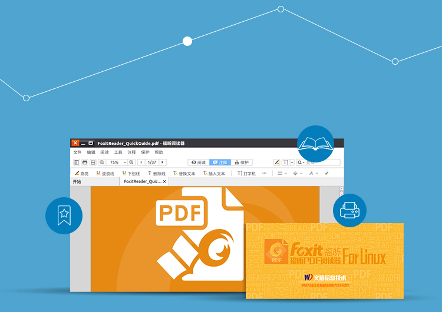

<div class="main wide">

<div class="text" style="position:absolute; top:75px; left:320px">

<div><h1>Convenient PDF</h1></div>

<div><h3>
<p>Wendun Foxit Reader is a PDF viewer based on Linux version of Foxit Reader. For Chinese users, it is easier to install and utilize. In Wendun Foxit Reader, not only PDF viewing is supported, but also bookmark、comment、print, etc.</p>
</h3></div>

</div>



</div>
